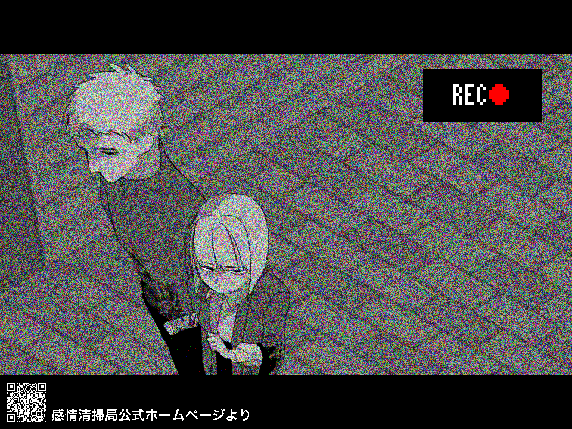

202█年██月██日、██県██市██町の住宅街で火災が発生し、木造二階建ての住宅一棟が全焼した。焼け跡からは家主の苧環██さん（年齢非公表）とその家族、さらに使用人とみられる数名の遺体が発見された。警察および感情清掃局の発表によると、遺体はいずれも火災による焼死ではなく、刃物による複数の刺し傷・切創が確認されているという。
現場は閑静な住宅街の一角に位置しており、周囲の住宅に延焼はなかった。出火当時、爆発音や叫び声を聞いたという近隣住民の証言が複数寄せられており、警察は放火による犯行の可能性が高いとみて捜査を進めている。
現場を調査した感情清掃局██支部によると、焼け跡からは通常の火災では検出されない高濃度の「怒り」「怨念」因子が複合的に検出されたという。感情因子が検出された範囲は建物内部全域におよび、特に居間と寝室付近で濃度が高かったとされているほか、一般的な感情暴発現象に伴う汚染値を大きく上回っており、暴発源となった人物の特定が急がれている。清調査後、現場周辺は一時的に立入禁止となり、翌日午後には清掃処理が完了した。
一方で、苧環家の長男である苧環アオイさん（17）と四女の苧環フヨウさん（13）の行方が分かっていない。近隣店舗の防犯カメラには、火災発生前後とみられる時間帯に、二人が慌ただしく走り去る姿が映っており、衣服に血痕のような汚れが確認されているという。警察は事件への関与も含めて慎重に行方を追っている。
近隣住民の一人は、「苧環さんの家ではここ数か月、夜中に言い争うような声が聞こえていた。家族仲が良くないという話もあった」と証言している。また、2ヶ月ほど前に苧環夫妻が再婚したとの情報もあり、家族間のトラブルが背景にあった可能性もあるとして、警察は慎重に捜査を進めている。
感情清掃局は「感情暴発による汚染拡大の危険性があるため、現場周辺に立ち入った市民は異常な情動反応（強い怒り・恐怖・倦怠感など）を自覚した場合、速やかに医療機関または当局へ連絡してほしい」と注意を呼びかけている。
本件に関する情報提供は、最寄りの警察署、または感情清掃局地方支部まで。
活動報告へ
トップページへ